콘그리브 로켓 (1) - 인도에서 아스널까지
게시: 2026-01-12T06:30:03+09:00
1813년 라이프치히에 영국군의 로켓 부대가 참전하게 된 계기는 1780년 인도 남동부 첸나이(Chenai) 근처인 풀랄루어(Pullalur)에서 시작됩니다. 이 마을 근처에서 약 4천의 영국 동인도회사(EIC, East India Company) 소속 부대와 인도 마이소르(Mysore) 왕국의 티푸(Tipu) 술탄이 이끄는 1만1천 병력이 충돌했는데, 결과는 영국 동인도회사군의 참패였습니다. 4천의 병력 중 불과 수백 명이 살아서 도망쳤고, 사망자가 2천이 넘었으며 포로도 1천이 넘었습니다. 부대 지휘관인 베일리(William Baillie) 중령을 포함한 유럽계 장교 50여 명도 포로로 잡힌 이 전투는, 이후 1849년 영국-시크 전쟁 때 칠리안왈라(Chillianwala) 전투에서 영국군이 참패하기 전까지는 인도 역사상 유럽 군대가 인도에서 겪은 가장 큰 패배로 기록됩니다.
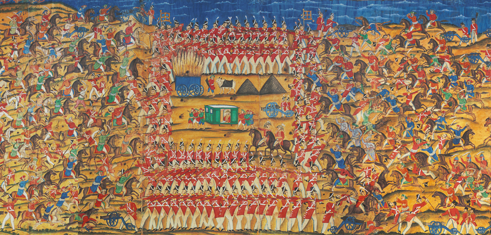
(티푸 술탄이 이 대승을 기념하기 위해 그리게 한 풀랄루어 전투도의 일부입니다. 원래 좌우로 훨씬 더 긴 그림인데, 이 가운데 부분에 영국군이 방진을 짜고 저항하는 모습이 묘사되어 있습니다.)
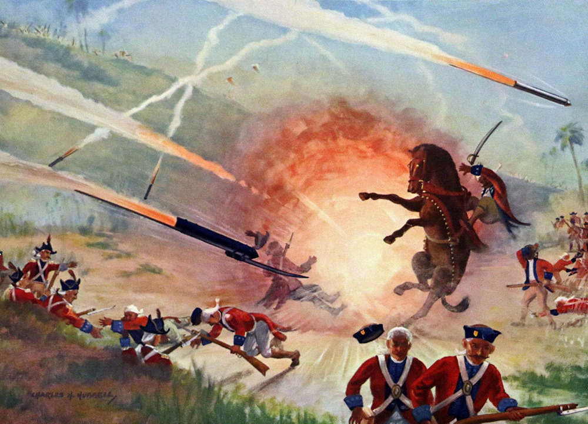
(1780년 풀랄루어 전투에서 마이소르 왕국군이 발사한 로켓 무기가 동인도회사군을 덮치는 장면입니다. 그림과는 달리, 당시 마이소르 왕국군의 로켓 무기는 폭발 탄두를 갖추고 있지는 않았고, 대지에 부딪힌 뒤 여기저기를 튀어다니며 병사들을 쓰러뜨렸다고 합니다.) 이 풀라루어 전투에서 동인도회사군이 패배한 이유는 병력 상당수가 현지인으로 구성된 동인도회사군의 낮은 사기와 탈영 등의 문제도 있고 지휘관의 리더쉽 부족 및 전술적 실수 등 여러가지가 있겠습니다만, 무기 기술적인 측면에서 마이소르 왕국군이 앞서는 부분도 있었습니다. 바로 로켓이었습니다. 마이소르 왕국군 뿐만 아니라 다른 지역의 인도군도 로켓을 무기로 사용하는 경우가 적지 않았습니다. 16세기 인도 북부에 이슬람 세력이 침략하여 세운 무굴 제국은 오스만 투르크 및 사파비 페르시아와 함께 '화약 제국'(Gunpowder Empires)으로 불릴 정도로 화약 무기를 성공적으로 활용하던 왕국이었습니다. 다만 이전의 인도식 로켓 무기는 질긴 종이로 만든 외피를 가진 작고 사정거리도 짧은 것이라서, 적의 병사와 말을 놀라게 하는 심리전 병기로 많이 사용되었을 뿐 인마를 직접 살상하는 타격 무기로서의 효용은 떨어지는 편이었습니다. 그런데 티푸 술탄이 1780년 사용한 것은 외피를 무쇠로 만든 것이라서 더 크고 무겁고 타격력도 강한 병기였습니다. 이후로도 영구군은 마이소르 왕국군과 싸울 때 여기저기서 그런 로켓 병기를 상대해야 했고, 그로 인해 적지 않게 피해를 입었습니다. 하지만 결국 영국은 최종적으로 마이소르 왕국을 무너뜨리고 티푸 술탄을 살해했으며, 그 요란하고 성가셨던 티푸의 로켓도 다량 손에 넣었습니다. 그 로켓을 몸으로 상대했던 동인도회사군의 장교들은 많이 과장되기 마련인 전투 경험담에서 로켓 이야기를 뺴놓지 않았고, 그 실물 샘플이 영국 본토로도 전달되었습니다.
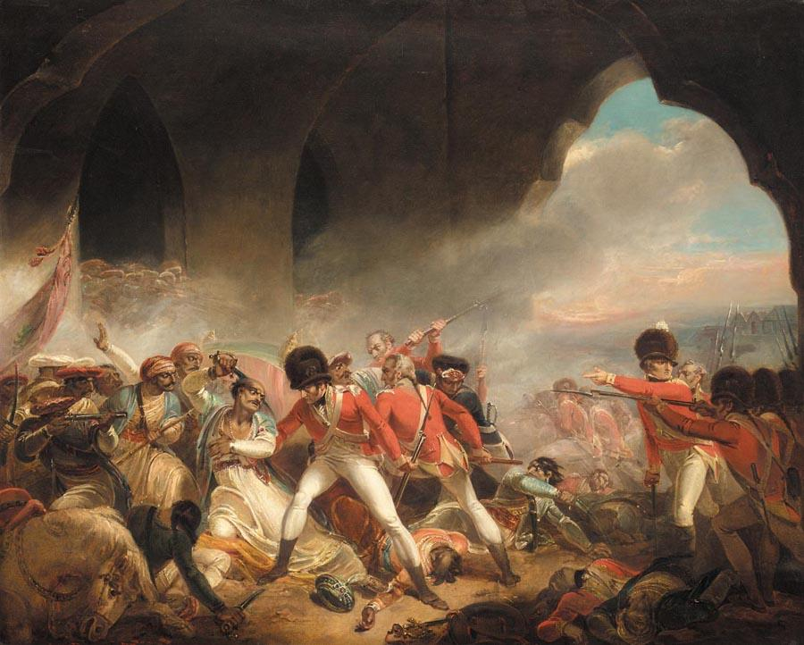
(마이소르 왕국의 왕인 티푸는 영국 동인도회사에 끝까지 저항했습니다만 결국 1799년 패배하고 영국군에게 살해됩니다. 그가 최종적으로 패배한 것에는 영국의 힘이 강했기 때문이기도 했지만, 그의 왕국은 다수의 힌두교 피지배 주민과, 그들을 다스리는 이슬람 지배층으로 구성되어 있다는 본질적 문제 때문이기도 합니다. 그의 이야기는 제가 나폴레옹 관련 역사 블로그를 시작하게 된 계기인 Sharpe 시리즈 중 Sharpe's Tiger 편에 자세히 나옵니다. 그 소설 속에서는 티푸를 죽이고 그의 보물을 훔치는 사람이 바로 주인공 Sharpe 상병이지요. 이 그림은 영국 화가 Henry Singleton이 그린 '티푸의 마지막 저항'이라는 그림입니다.) 그런 로켓 무기에 대한 경험담을 흥미롭게 경청한 사람들 중에는 콘그리브(William Congreve)라는 29세의 청년도 있었습니다. 콘그리브가 이 이야기를 들은 것이 중요한 것이, 그는 울위치(Woolwich)의 왕립 무기공장(Royal Arsenal) 책임자인 윌리엄 콘그리브(Sir William Congreve, 1st Baronet) 중장의 맏아들이라는 점이었습니다. 그는 아버지를 설득하여 1801년부터 로열 아스널에서 로켓 병기를 개발하기 시작했습니다.
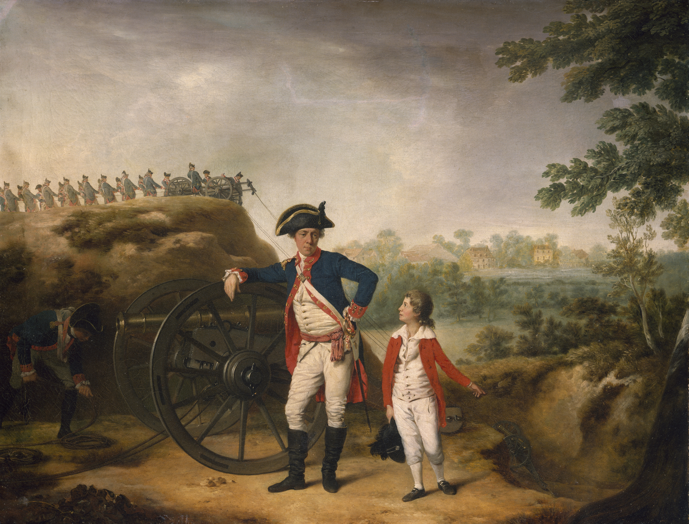
(아들 콘그리브가 10살 때이던 1782년 그려진 아빠 콘그리브와 아들 콘그리브의 모습입니다. 당시 아빠 콘그리브는 포병 대위였습니다. 고작 대위 나부랭이가 아들과 함께 이런 그림을 발주할 수 있었던 것은 물론 콘그리브가 남작이었기 때문이었습니다. 대위라고 다 같은 대위가 아닌 거지요. 저 아빠 대위가 기대고 있는 대포는 8파운드 포입니다. 당시 대포 중 거의 가장 작은 것입니다.)
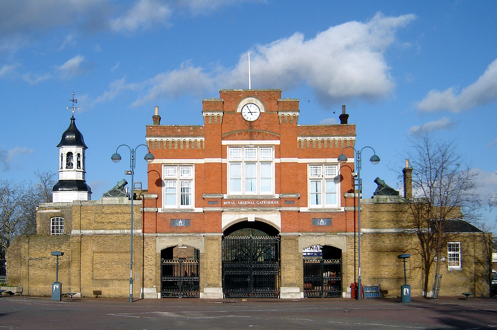
(지금까지 남아있는 울위치 왕립 무기공장(Royal Arsenal)의 입구 건물(Beresford Gate)입니다.)
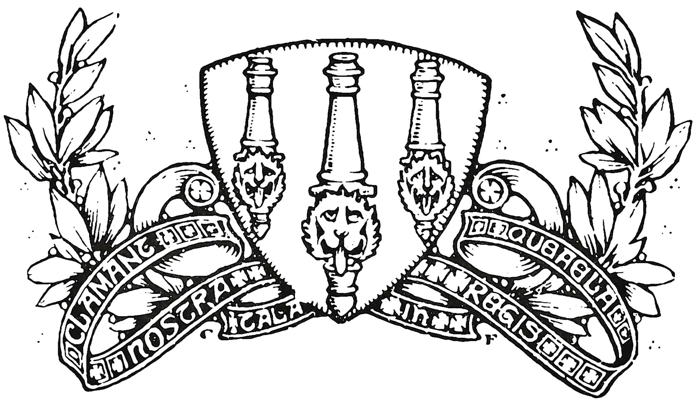 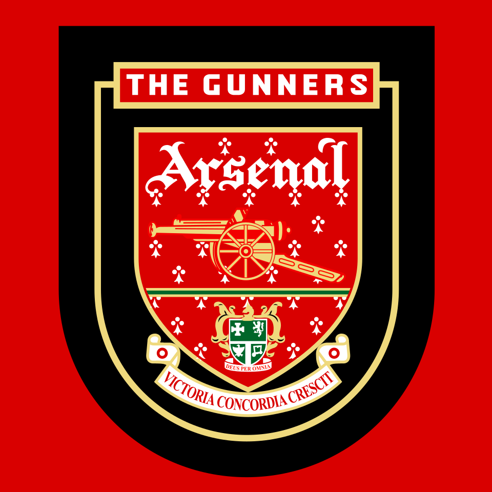
(프리미어 리그의 축구클럽 아스널은 바로 이 울위치 로열 아스널에서 일하는 탄약 공장 노동자들이 1886년 만들었기 때문에 팀명을 아스널로 정한 것입니다. 원래 위치는 따라서 런던 남동부였는데 1913년 홈그라운드를 런던 북부로 옮기면서 토트넘과 함께 북런던 더비를 구성하게 되었습니다. 윗 그림은 1888년의 최초 클럽 문장이고, 아래 그림은 1994~95년 사용된 문장입니다.)
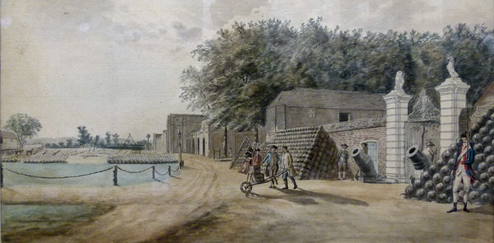
(1795년 경 울위치의 왕립 무기공장 및 연구소 문앞의 모습입니다. 그러니까 저기서 저렇게 탄약 나르던 사람들이 나중에 아스널 구단을 창립한 거지요. 포탄이 야적되어 있고, 저 뒤에는 대포들이 열지어 있습니다. James Cockburn의 작품입니다.) 이렇게 시작된 콘그리브의 연구는 원래 인도에서 사실상 완성된 것이나 다름 없던 것을 개량하는 형태로 진행되었고, 또 인도에 비해 금속 가공술이나 화약 제조법 등 기반 기술이 훨씬 더 발달되어 있었기 때문에 진척이 매우 빨랐습니다. 지금도 그렇지만 로켓을 설계 및 제조하는데 있어서 가장 큰 문제는 (1) 어떻게 하면 폭발이 아니라 안정적인 연소를 시킬 수 있는가, 그리고 (2) 어떻게 하면 안정적인 탄도를 그리도록 유도할 수 있는가의 2가지입니다. 1) 추진제 연소 제어 추진제로는 그냥 흑색 화약이 사용되었습니다. 바닥면에만 구멍이 뚫린 쇠로 된 밀폐 원통에 화약을 잔뜩 집어 넣고 불을 붙이면 그건 로켓이 아니라 폭탄이 되기 십상이었습니다. 따라서 급격한 폭발이 아니라 천천히 안정적으로 연소를 구현하기 위해서 흑색화약의 성분 배합을 조정했습니다. 원래 흑색화약은 질산칼륨(KNO₃, 초석) 75%에 숯(C) 15%, 그리고 황(S) 10%의 조합으로 만듭니다. 여기서 주된 폭발력은 숯이 타들어가면서 숯의 탄소가 대기 중의 산소와 결합하여 생기는 이산화탄소의 힘입니다. 원래 숯을 공기 중에서 태우면 폭발력이 매우 약하지만, 여기에 초석, 그러니까 질산칼륨(saltpeter, niter, KNO₃)을 섞어서 불을 붙이면 질산칼륨이 열과 반응하여 산소를 폭발적으로 공급해주므로 강력한 폭발이 일어나는 것입니다. 유황은 그 화학 작용이 잘 일어나도록 안정제 역할을 하는 것입니다. 따라서, 그냥 숯을 대기 중에서 태우는 것보다는 훨씬 빠르게, 그러나 머스켓 소총 약실 속의 화약보다는 느리게 연소시키려면 질산칼륨을 적게 넣으면 되는 것입니다. 그래서 콘그리브 로켓 속의 추진제는 실험을 거쳐 질산칼륨 63%에 숯 24%, 그리고 황(S) 13%의 조합으로 만들었습니다. 그렇게 천천히 연소가 일어나도록 화약 성분 배합을 할 경우, 길고 좁은 원통형 로켓의 끝부분에서만 연소가 일어난다면 충분한 추진력을 낼 수 없습니다. 그 문제를 해결하기 위해서는 일종의 성형 작약탄을 만들었습니다. 즉, 로켓 속에 쟁여넣은 원통형 추진제 충전물의 중심부에 배기구부터 거의 탄두 부근까지 좁고 긴 빈 공간을 만든 것입니다. 그렇게 긴 빈 공간이 있는 고체 연료의 배기구 쪽에 불을 붙이면 그 불은 순식간에 그 빈 공간을 따라 번져 로켓 추진제 충전물의 전체에 걸쳐 중심부에서 원주 바깥쪽으로 연소를 일으키게 됩니다.
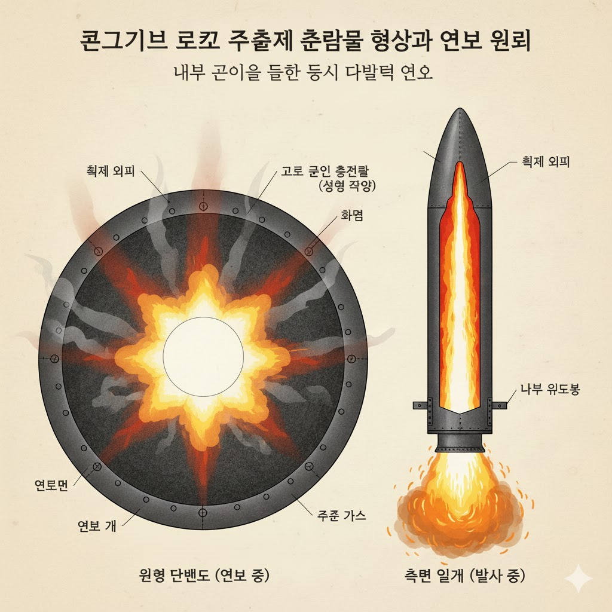
(Gemini에게 위의 설명문을 주고 그리게 한 콘그리브 로켓 단면도입니다. 비교적 잘 그리긴 했는데, 한글 설명은 엉터리네요.) 하지만 흑색화약은 분말이잖아요? 원통형 로켓 속에서 어떻게 저렇게 고체 모양으로 모양을 만들 수 있었을까요? 실은 저건 그다지 어렵지 않습니다. 원래 머스켓용 종이 탄약포(cartridge)를 만들 때에도, 그 속에 넣는 흑색화약은 초석과 숯, 황을 그냥 가루로 빻아서 섞는 것이 아니라, 물을 약간 넣고 잘 개어서 말린 뒤 다시 부수어 굵은 가루로 만들게 되어 있습니다. 흑색화약의 저 3가지 주성분은 비중이 다르기 때문에, 잘 섞어준다고 해도 그냥 고운 가루 상태로 놔두면, 운반하면서 흔들리는 와중에 가벼운 숯가루는 위로, 무거운 초석가루는 밑으로 점차 분리됩니다. 그러면 화약 폭발이 원활하지 않게 되므로, 3가지 성분이 서로 엉겨 붙은 상태로 유지하기 위해 물로 개어 굳히는 것입니다. 마찬가지로 로켓 속에 추진제를 쟁여넣을 때도, 긴 둥근 막대기를 로켓 원통의 중심선을 따라 위치시켜 놓은 상태에서 물로 개어 반쯤 반죽처럼 된 추진제를 압착 충전한 뒤 건조시키면 저런 성형 추진제를 만들 수 있는 것입니다. 게다가, 반죽 형태로 압착 충전한 성형 추진제는 추가적인 연소 제어 효과를 냈습니다. 원래 가루 형태로 느슨하게 충전된 흑색화약은 가루 특징상 표면적이 넓으므로 급격한 폭발을 일으키기 쉽지만, 제한된 표면만 노출되는 성형 흑색화약은 표면에서부터 층을 이루며 타들어 가는 성질(Deflagration)을 가지게 되기 때문입니다.
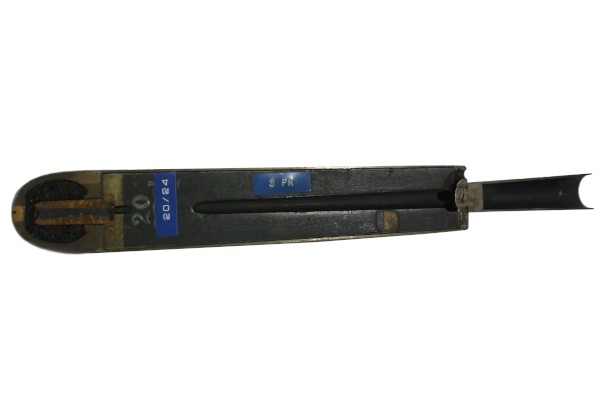
(아직 남아있는 실제 콘그리브 로켓의 단면입니다.) 2) 비행 제어 로켓 비행 제어의 어려움은 손바닥 위에 가늘고 긴 막대기를 세워놓고 들어올리는 광경을 생각해보면 쉽게 이해할 수 있습니다. 아무리 손재주가 좋은 사람이라도, 손바닥을 위로 들어올리면 얼마 안 가 막대기가 옆으로 쓰러지게 됩니다. 모든 로켓은 배기구가 아래쪽 끝으로 나있고 거기서 추진력이 나오므로, 이 현상을 피할 수가 없습니다. 즉, 발사하면 짧은 거리는 원하는 대로 날아가더라도, 곧 엉뚱한 방향으로 빗나가기 십상인 것이지요. 하지만 반대로, 막대기 위를 손가락으로 집고 들어올리면 어떨까요? 막대기를 똑바로 위로 들어올리는 것은 매우 쉽습니다. 즉 추진력을 비행 방향 앞쪽에서 내느냐 뒤쪽에서 내느냐가 그렇게 큰 차이를 내는 것입니다. 그 원리와 그에 따른 해결책은 이미 머리 좋은 인도인들이 다 이해하고 만든 상태였고 콘그리브는 그걸 반복 테스트를 통해 가다듬었습니다. 즉, 긴 막대기의 앞쪽 끝에 로켓을 금속띠로 단단히 묶은 것입니다. 이건 긴 막대기를 앞에서 로켓으로 잡아끄는 형태로 구현한 것이라고 할 수 있습니다. 로켓 입장에서 보면 아무 필요도 없는 긴 막대기를 꼬리에 달고 나는 셈인데, 실은 그 긴 막대기가 무게 추 역할을 하여 비행 제어를 해주는 것이었습니다.
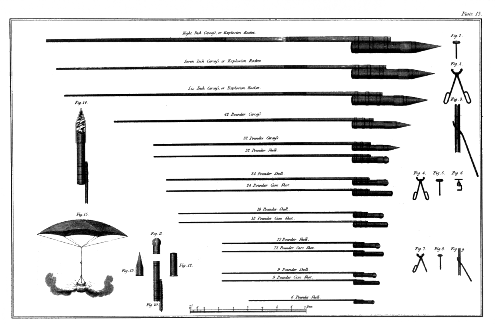
(콘그리브 로켓의 핵심은 저 막대기라고도 할 수 있습니다. 종류에 따라 다르지만, 32파운드 로켓의 경우 본체는 약 90cm 길이에 약 5.2m 길이의 막대기를 달았습니다.) 이렇게 기본형이 완성된 콘그리브 로켓은 전쟁의 양상을 확 뒤집어 놓았을까요? (라이프치히 전투에서 삼천포로 빠지지 않기 위해 원래 1편으로 짧게 가려고 했는데 또 분량 조절 실패로 부득이 다음 주로 이어집니다...) Source : The Life of Napoleon Bonaparte, by William Milligan Sloane Napoleon and the Struggle for Germany, by Leggiere, Michael V With Napoleon's Guns by Colonel Jean-Nicolas-Auguste Noël https://www.britannica.com/event/Napoleonic-Wars/Dispositions-for-the-autumn-campaign http://www.historyofwar.org/articles/campaign_leipzig.html https://warhistory.org/@msw/article/leipzig-battle-of-the-nations https://www.encyclopedia.com/history/encyclopedias-almanacs-transcripts-and-maps/leipzig-battle-0 https://warfarehistorynetwork.com/article/death-knell-for-napoleons-empire/ https://en.wikipedia.org/wiki/Congreve_rocket https://en.wikipedia.org/wiki/Sir_William_Congreve,_2nd_Baronet https://www.usni.org/magazines/proceedings/1968/march/congreve-war-rockets-1800-1825 https://www.spacecentre.co.uk/collections/categories/rockets/congreve-rocket-cross-section/ https://www.theobservationpost.com/blog/?p=618